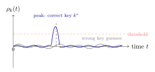

Chapter 14: Side-Channel Attacks¶
A cryptographic algorithm may be mathematically sound yet leak its secrets through physical observables: execution time, power consumption, electromagnetic radiation, acoustic noise, or cache behaviour. These side channels bypass formal security proofs, which assume a black-box adversary with access only to inputs and outputs. This chapter surveys the principal side-channel categories and their countermeasures.
14.1 Side-Channel Attack Taxonomy¶
Definition 14.1 (Side-Channel Attack)
A side-channel attack exploits information leaked by the physical implementation of a cryptographic system rather than weaknesses in the underlying algorithm. The leaked information is called the side channel.
| Category | Observable | Examples |
|---|---|---|
| Timing | Execution time | Kocher RSA, cache hit/miss |
| Power (SPA) | Single power trace | RSA square-and-multiply |
| Power (DPA) | Statistical analysis of many traces | AES S-box correlation |
| Electromagnetic | EM field emitted by chip | TEMPEST, EM-DPA |
| Cache | Cache state / timing | Flush+Reload, Spectre |
| Acoustic | Sound from capacitors, coils | RSA acoustic attack |
| Fault Injection | Induced computational errors | Voltage glitch, laser |
14.2 Timing Attacks¶
Theorem 14.1 (Kocher Timing Attack (1996))
Paul Kocher demonstrated that RSA private key bits can be recovered by measuring the time taken to perform modular exponentiation for chosen ciphertexts. Even nanosecond-level timing differences, measured over many trials, reveal whether a “square-and-multiply” step includes the multiply (bit = 1) or not (bit = 0).
The attack works because standard binary exponentiation has a data-dependent branch: \(m^d \bmod n\) processes each bit of \(d\), squaring for every bit and multiplying only when the bit is 1. That timing difference is measurable.
In a TLS context, timing attacks on the server’s private-key operations are particularly dangerous because an attacker can trigger thousands of handshakes from the internet without any privileged access. The ROBOT attack (2018) revived Bleichenbacher’s original 1998 timing oracle against RSA PKCS#1 v1.5 padding in TLS, affecting implementations in F5, Cisco, Citrix, and others. The attacker sends crafted TLS ClientKeyExchange messages and measures response timing (or error type) to determine whether the padding was valid. Given enough queries, the attacker decrypts the premaster secret from previously recorded TLS sessions. The lesson is that even a timing difference measured over a network—with jitter, retransmissions, and variable server load—can be exploited at scale.
Constant-time comparisons matter not just for HMAC verification but wherever secret data influences a conditional. Password hashing functions deliberately produce fixed-time output for exactly this reason, but developers often then compare the resulting hash strings with == and undo that protection. Even len() checks before a constant-time comparison can leak information: returning early because “the token has the wrong length” reveals how long the expected token is. The correct approach is to always run hmac.compare_digest() on the full outputs, accepting that a wrong-length input will simply not match.
14.2.1 Variable-Time String Comparison¶
A common programming error: comparing secret values (tokens, MACs) with ordinary equality operators, which short-circuit on the first mismatched byte.
import hmac
import time
secret_token = b'supersecret_api_token_abc123'
# VULNERABLE: early exit on first differing byte
def verify_token_bad(user_token: bytes) -> bool:
return user_token == secret_token # Variable-time!
# SECURE: constant-time comparison --- no early exit
def verify_token_good(user_token: bytes) -> bool:
# hmac.compare_digest is guaranteed constant-time in CPython
return hmac.compare_digest(user_token, secret_token)
# Demonstration of timing oracle (conceptual)
def measure_compare(guess: bytes) -> float:
start = time.perf_counter_ns()
verify_token_bad(guess)
return time.perf_counter_ns() - start
# An attacker can enumerate byte-by-byte using timing measurements
Always Use Constant-Time Comparison
In Python use hmac.compare_digest(). In C use CRYPTO_memcmp() (OpenSSL) or timingsafe_bcmp() (BSD). Never use memcmp() or string equality for secret comparison.
14.3 Power Analysis Attacks¶
14.3.1 Simple Power Analysis (SPA)¶
SPA examines a single power trace to extract secret information. In RSA with binary exponentiation, the trace shows a distinct pattern for each “square” and “square-and-multiply” pair, directly revealing key bits.
The distinction between SPA and DPA is not just about how many traces you need—it reflects a fundamentally different threat model. SPA requires that the secret-dependent operations produce a visually distinguishable signal in a single trace. This is realistic when the operations are coarse-grained and have very different power profiles: a modular multiply takes far longer and consumes more power than a mere square, so RSA key bits are directly readable. SPA countermeasures focus on making all code paths consume identical power and take identical time regardless of the secret—so-called regular implementations.
DPA is far more powerful because it extracts secrets statistically, using many traces to average out noise. An implementation that adds random jitter, randomises memory access patterns, or uses balanced logic gates can defeat SPA entirely yet still be vulnerable to DPA—the attacker simply collects more traces and averages out the randomness. Defeating DPA requires masking: the intermediate values that correlate with the key are XOR-masked with a fresh random value every computation, so the raw power value at any moment is uncorrelated with the key byte. First-order DPA requires only one unmasked value in a trace; first-order masking defeats this by ensuring every intermediate result is always the XOR of the real value with an independent random mask. Second-order DPA then targets the combination of two such masked values—the mask and the masked result—by using a second-order statistical analysis, which is why high-security implementations use higher-order masking schemes.
14.3.2 Differential Power Analysis (DPA)¶
To understand DPA, start with the physical intuition: CMOS circuits draw more current when they switch more bits. This leads to a workable model of power consumption.
Definition 14.2 (Hamming Weight Power Model)
The Hamming weight model assumes that the instantaneous power consumption of a CMOS gate is proportional to the number of 1-bits in the value being processed:
where \(\mathrm{HW}(v) = \sum_{i} v_i\) is the Hamming weight of intermediate value \(v\) and \(\alpha\) is a device-dependent constant.
DPA, introduced by Kocher, Jaffe, and Jun (1999), uses statistical analysis of many power traces to overcome measurement noise. Given the model above, the attack proceeds as follows.
14.3.3 DPA Attack Steps Against AES¶
-
Collect traces: encrypt \(N\) known plaintexts \(p_1, …, p_N\); record power trace \(T_i(t)\) for each.
-
Choose intermediate value: select a one-byte AES S-box output \(v_{k}(p_i) = \mathrm{SBox}(p_i[b] \oplus k[b])\) for byte \(b\) and key guess \(k\).
-
Hypothetical power: compute \(H_{k,i} = \mathrm{HW}(v_{k}(p_i))\) for all \(N\) traces and all 256 key guesses \(k \in \{0,…,255\}\).
-
Correlate: compute Pearson correlation \(\rho_k(t)\) between \(\{H_{k,i}\}_{i=1}^N\) and \(\{T_i(t)\}_{i=1}^N\) for each time sample \(t\).
-
Identify key: the key guess \(k^*\) that maximises \(\max_t |\rho_k(t)|\) is the correct key byte.

14.3.4 Correlation Power Analysis (CPA)¶
CPA is a refinement of DPA that uses Pearson’s linear correlation coefficient rather than a difference-of-means statistic, achieving better key recovery with fewer traces—typically hundreds rather than thousands for AES-128.
14.4 Cache Side-Channel Attacks¶
14.4.1 Flush+Reload¶
Flush+Reload exploits shared memory (e.g., shared libraries) between attacker and victim. The attacker flushes a cache line using clflush, waits for the victim to execute, then times a reload. A fast reload indicates the victim accessed that address.
14.4.2 Spectre (CVE-2017-5753)¶
Spectre: Branch Predictor Poisoning
Spectre mistrains the CPU’s branch predictor to speculatively execute code that accesses out-of-bounds memory. Although the out-of-bounds access is architecturally squashed, the cache state it creates is observable via a timing side channel.
-
Attacker mistrains branch predictor to predict “branch taken.”
-
Victim runs code with bounds check:
if (x < array_len) val = array[x];. -
CPU speculatively executes with attacker-controlled \(x\) beyond
array_len. -
Speculative load brings
secret[i]into cache viaside_channel[val * 512]. -
Branch resolves as not-taken; results discarded, but cache state persists.
-
Attacker measures timing of
side_channel[0..255 * 512]to recoverval.
14.4.3 Meltdown (CVE-2017-5754)¶
Meltdown exploits out-of-order execution to read kernel memory from user space before the CPU enforces privilege checks. It’s mitigated by Kernel Page-Table Isolation (KPTI), which maps kernel memory out of the user-space page table.
The microarchitectural mechanism behind Spectre is worth understanding in detail because it explains why software mitigations are so difficult. Modern CPUs use a branch predictor to guess which way a conditional branch will go before the condition has been evaluated. The CPU then speculatively executes instructions along the predicted path while the actual evaluation completes in parallel. If the prediction was correct, the speculative results commit and execution continues with no delay. If the prediction was wrong, the results are discarded—but crucially, any microarchitectural side effects (such as cache line loads) are not reversed. Spectre variant 1 mistrains this predictor deliberately: by repeatedly executing the victim’s bounds-checked code with values that make the branch predictably take the “in-bounds” path, the attacker conditions the predictor. Then the attacker supplies an out-of-bounds index. The predictor speculatively takes the “in-bounds” path and loads secret memory before the bounds check fails. The secret value ends up encoding itself in the cache state, where the attacker reads it via a Flush+Reload timing channel.
The reason Spectre is so hard to fully mitigate is that it exploits a fundamental performance optimisation. KPTI (which mitigates Meltdown) doesn’t help for Spectre because the out-of-bounds access happens within a single privilege domain. Compiler mitigations insert lfence barriers that serialise instruction execution, preventing speculative execution from crossing the barrier—but every such barrier has a measurable performance cost, and inserting them conservatively enough to be safe while not throttling performance is an ongoing engineering problem. Retpoline replaces indirect branches with a construct that prevents speculative execution of attacker-chosen target addresses, which closes Spectre variant 2 (branch target injection) but not variant 1.
14.5 TEMPEST and Electromagnetic Attacks¶
Definition 14.3 (TEMPEST / Van Eck Phreaking)
TEMPEST is the US government codename for standards governing compromising electromagnetic emanations. Van Eck phreaking (1985) demonstrated that CRT monitor signals could be reconstructed from their electromagnetic emissions at distance. Modern variants target LCD data cables, keyboards, and cryptographic chips.
EMSEC (Emission Security) standards (NATO SDIP-27, NIST SP 800-53 PE-19) define shielding requirements and inspection zones (Zones 0–2) based on threat distance.
14.6 Fault Injection¶
Definition 14.4 (Fault Injection)
Fault injection deliberately induces transient hardware faults—via voltage glitching, clock glitching, or focused laser pulses—to corrupt computations. Targets include: secure boot signature verification (skip check), AES key schedule (differential fault analysis), and PIN verification (force accept).
14.6.1 Rowhammer DRAM Attacks¶
Rowhammer
DRAM cells in adjacent rows electrically interfere. Repeatedly accessing (“hammering”) two aggressor rows causes bit flips in the victim row between them. Demonstrated attacks flip page table entries (PTEs) to escalate privileges. Mitigations: ECC memory, Target Row Refresh (TRR), LPDDR4X mitigations, and kernel-level access throttling.
14.7 Countermeasures¶
| Attack | Countermeasure | Mechanism |
|---|---|---|
| Timing (software) | Constant-time algorithms | No data-dependent branches or memory accesses |
| SPA / DPA | Masking | XOR intermediate values with random mask \(r\); unmask at output |
| DPA (RSA) | RSA blinding | Compute \((r^e \cdot m)^d \bmod n\), divide by \(r\) |
| Cache attacks | Cache partitioning / flush | Flush cache between security domains |
| Spectre | Retpoline / LFENCE | Prevent speculative indirect branches |
| Fault injection | Redundant computation | Compute twice; compare; abort on mismatch |
| Rowhammer | ECC DRAM | Error-correcting codes detect/correct single-bit flips |
| TEMPEST | Shielding / distance | Faraday cage; TEMPEST-certified hardware |
14.8 Exercises¶
Exercise 14.1
Describe a complete DPA attack against the first round of AES-128 encryption. (a) State the intermediate value you target and why byte 0 of the AES S-box is a good choice. (b) Write pseudocode for the correlation step. (c) How many power traces are typically required for a successful attack against an unprotected hardware implementation? (d) How does first-order masking raise the number of required traces?
Exercise 14.2
The following Python function compares a user-supplied HMAC against a stored HMAC:
def check_mac(user_mac, expected_mac):
return user_mac == expected_mac
(a) Explain the timing oracle this creates. (b) Describe how an attacker with 10,000 queries can recover the expected MAC byte-by-byte. (c) What is the correct fix? (d) Under what conditions does the fix fail to be constant-time at the CPU instruction level?
Exercise 14.3
Explain the Spectre variant 1 attack (bounds-check bypass). (a) Draw the speculative execution flow, marking which instructions execute architecturally and which execute only speculatively. (b) Explain how the cache state encodes the secret value. (c) Describe the Flush+Reload method used to decode the cache state. (d) Why does inserting lfence after the bounds check mitigate the attack?
Exercise 14.4
A secure boot implementation checks a firmware image signature before loading it. An attacker applies a brief voltage glitch during the signature verification routine, causing the comparison to return “equal” regardless of the actual signature. (a) What class of attack is this? (b) Propose three independent hardware countermeasures a chip designer could implement. (c) How does a redundant-execution countermeasure defend against a single glitch but fail against two precisely timed glitches?
Exercise 14.5
Rowhammer bit flips have been used to escalate privileges on Linux systems. (a) Explain the memory layout that makes a page-table entry (PTE) flip useful. (b) How does ECC DRAM mitigate single-bit Rowhammer flips? (c) Why is ECC insufficient against a double-sided Rowhammer attack that induces multiple flips? (d) List two OS-level mitigations that do not require specialised hardware.